← 返回首页
VLA / 策略架构 · 8
3.95VLA / 策略架构π系列VLA2610.32094
该研究将测试时训练（TTT）机制集成到Pi0.5和InternVLA-A1模型中，旨在通过人类演示与机器人轨迹的配对数据增强长程任务的记忆能力。实验表明，在当前规模下，引入TTT及对比正则化等手段并未显著提升模型基于演示进行目标选择的一致性，且单帧提示下的真实机器人执行仍受限于固定位置偏好。论文主要贡献在于详细记录了TTT在VLA中的实现细节、训练配置及负面观察结果，以支持后续复现与研究。
📐 查看论文原版模型结构图与讲解（Figure 1）
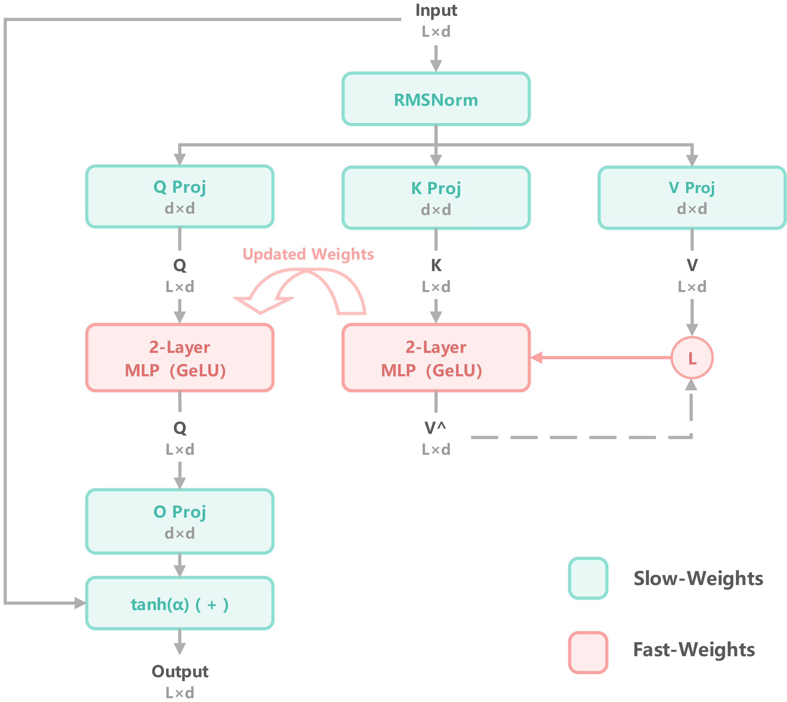
- 输入预处理与投影：原始输入经归一化（Normalization）及线性投影层映射为查询向量 $Q$、键向量 $K$ 和值向量 $V$。图中省略了批处理维度、多头拆分及内部残差细节，聚焦于核心张量变换流程，确保数据流清晰指向后续的记忆更新与检索模块。
- 右路：快速权重更新机制：该路径利用两层 GELU MLP（红色模块）作为内层模型，通过最小化内层损失函数 $\mathcal{L}_{inner}$ 来预测 $V$ 并更新快速权重 $\theta_{fast}$。此过程模拟测试时训练（TTT），使模型参数能根据当前上下文动态适应，实现从静态慢权重到动态快权重的即时演化。
- 左路：动态查询与输出生成：利用更新后的内层模型对 $Q$ 进行前向推理以获取增强特征，随后通过输出投影层映射回原始维度。最终结果经由门控残差连接（Gated Residual Connection）与初始输入融合，有效缓解梯度消失并保留原始信息，完成从上下文感知到特征重构的闭环。
- 双MLP结构语义：图中左右两个 MLP 模块实质代表同一内层模型在更新前后的两次调用状态。左侧对应参数更新后的推理阶段，右侧对应基于 $K, V$ 的梯度下降更新阶段，直观展示了 TTT 架构中“预测-更新-查询”的核心迭代逻辑。
进入深读卡片查看完整方法与千问问答 →
3.89VLA / 策略架构π系列VLA2610.32941
本文提出Backtrack，一种针对冻结视觉-语言-动作（VLA）模型的轻量级失败检测与恢复机制。该方法通过训练一个仅占模型参数0.48%-0.88%的小型预测头来估计失败概率，并在检测到潜在失败时回溯机械臂近期运动以重置状态。在LIBERO基准测试中，Backtrack使SmolVLA、π0.5和π0-FAST的失败率降低19%-48%，成功率最高提升7.4个百分点。
📐 查看论文原版模型结构图与讲解（Figure 1）
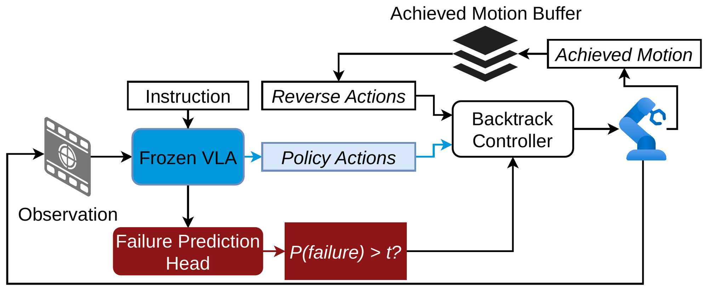
- 冻结VLA主干与特征提取：系统以预训练且参数冻结的视觉-语言-动作（VLA）模型为核心，接收当前观测并生成候选动作序列。同时，该主干网络内部已计算的多模态中间特征被旁路引出，作为后续故障预测模块的唯一输入源，确保不引入额外推理开销。
- 轻量级故障预测头：一个小型化的故障预测头（Failure Prediction Head）读取上述冻结VLA的特征，实时估计当前回合失败的概率 $p_{\text{fail}}$。该模块旨在通过低计算成本识别潜在的风险状态，其输出作为控制逻辑切换的关键判据。
- 基于阈值的回溯控制器：Backtrack控制器依据预测概率与预设阈值 $t$ 的比较结果执行分支决策。若 $p_{\text{fail}} > t$，控制器抑制VLA提出的动作，转而触发回溯机制；否则，正常执行策略动作。此机制实现了风险感知的动态控制流切换。
- 运动缓冲区与状态更新：系统维护一个存储近期已实现机械臂运动的缓冲区（Buffer）。在正常执行阶段，实际达成的运动被写入缓冲区；而在回溯阶段，控制器从缓冲区检索并重放历史轨迹以恢复稳定状态，且回溯期间的运动不被记录，从而保证数据分布的纯净性。
进入深读卡片查看完整方法与千问问答 →
3.85VLA / 策略架构π系列VLA2610.31859
该研究指出，在LeRobot、openpi等主流VLA代码库中，若全量微调时将可训练权重直接存储为bfloat16且无fp32主副本，AdamW更新会因精度截断导致79%-99%的梯度被静默擦除。实验显示，修复此问题（保持fp32权重）可使SmolVLA和π0.5在LIBERO基准上的成功率显著提升（如π0.5从5.1%升至80.9%），并提供了具体的配置修正方案。
📐 查看论文原版模型结构图与讲解（Figure 1）
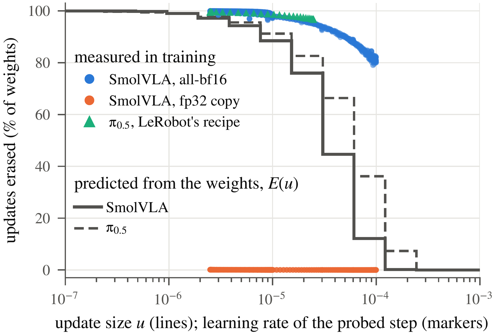
- 理论预测基线（Lines）：图中实线与虚线分别展示了基于发布权重计算的理论擦除率 $E(u)$。实线对应 SmolVLA 的动作专家模块，虚线对应 $\pi_{0.5}$ 在 bf16 精度下存储的权重矩阵。该基线量化了若存在 fp32 副本时，由权重更新导致的参数变化预期份额，作为衡量实际优化行为的参照系。
- 实测擦除率（Markers）：散点标记记录了 AdamW 优化器每 100 步执行后，权重保持不变的百分比。针对 $\pi_{0.5}$，测量范围涵盖所有接收梯度的 bf16 张量（含 Token Embedding），而虚线基线未包含此部分。数据直观显示，在缺乏 fp32 主副本的情况下，实测擦除率始终高于理论预测值 $E(u)$，揭示了低精度训练中的数值截断效应。
- 实验对比与排除项：图注指出 SmolVLA 在 LeRobot 配方下的运行结果同样高于 $E$，但为保持图表清晰度未予展示。该结构图核心在于通过对比“理论预测”与“实测不变率”，论证了 bf16 训练中因缺少 fp32 精度保护而导致的额外信息擦除现象，强调了高精度副本对维持模型学习动态的重要性。
进入深读卡片查看完整方法与千问问答 →
3.83VLA / 策略架构π系列VLA2610.32102
该研究揭示了Flow-Matching VLA策略中执行视野（execution horizon）与采样深度（sampling depth）之间的符号反转耦合效应：在快速重规划下浅层采样降低性能，但在长开环执行下反而提升成功率。其几何机制在于数值截断收缩了轨迹分散度，作为隐式正则化器抑制了开环漂移累积。在π0、π0.5等骨干网络上的实验表明，联合调整这两个参数可在无需训练的情况下实现高达5.6倍的推理加速并提升任务成功率。
📐 查看论文原版模型结构图与讲解（Figure 1）
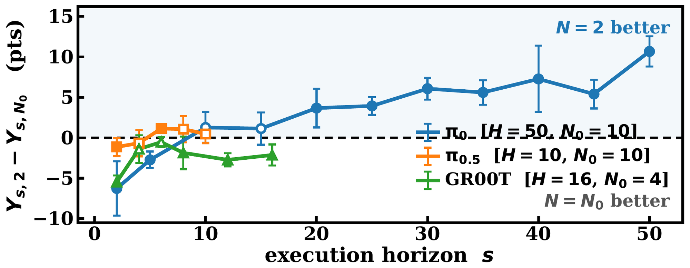
- 核心耦合机制：图示揭示执行时域 $s$ 与采样深度 $N$ 间的符号反转耦合关系。浅层采样（$N=2$）在快速重规划（小 $s$）下因离散化误差导致性能退化，但在扩展开环执行（大 $s$）中通过降低计算延迟获得系统性增益。
- 流匹配动作生成：策略基于观测 $o_t$ 利用条件流匹配合成动作块 $\mathbf{a}_t \in \mathbb{R}^{H \times D_a}$。通过反向积分概率流 ODE，从噪声 $x^{(0)} \sim \mathcal{N}(0, I)$ 出发，经 $N$ 步欧拉更新 $x^{(k+1)} = x^{(k)} - \Delta\tau v_\theta(x^{(k)}, \tau_k, o_t)$ 得到终端状态 $x^{(N)}$。
- 滚动时域执行策略：采用滚动时域控制平衡闭环反馈与计算负载。图中对比不同 $s$ 下的性能曲线，展示在 LIBERO-Long 基准上，配对边际对比 $Y_{s,2} - Y_{s,N_0}$ 随 $s$ 变化的趋势，实线标记表示所有种子间符号一致的区域。
进入深读卡片查看完整方法与千问问答 →
3.05VLA / 策略架构π系列VLA2610.32431
针对VLA强化学习中GRPO对失败轨迹全动作统一惩罚导致恢复行为被误伤的问题，提出Martingale GRPO (MART-GRPO)。该方法通过鞅分析确定理想截断边界，利用微调后的VLM定位失败轨迹中最后一次可见错误且无恢复的区间，仅保留该前缀的失败反馈。在RoboTwin 2.0上的OpenVLA-OFT实验表明，该方法相比全轨迹GRPO显著提升了多任务成功率并降低了梯度方差。
📐 查看论文原版模型结构图与讲解（Figure 1）
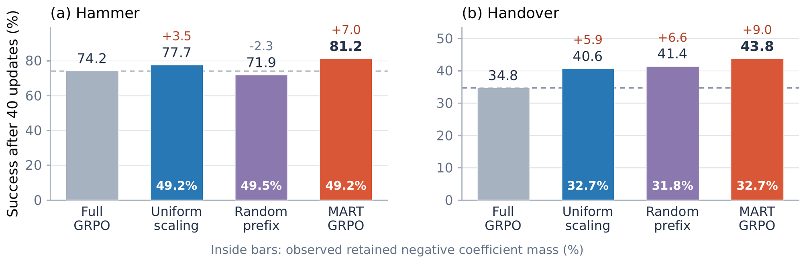
- 反馈消融实验设置：该图展示了在更新步数 $t=40$ 时的成功率对比，以虚线标示 Full GRPO 基准性能。横轴为不同消融配置，纵轴为任务成功率，柱状图上方的百分比数值直观呈现了各变体相对于 Full GRPO 的性能增减（单位：百分点），旨在量化特定反馈机制对策略优化的贡献度。
- 负系数质量保留分析：柱体内部嵌入的百分比数据揭示了关键机制——“观测到的保留负系数质量”（retained negative coefficient mass）。该指标在全部 40 次更新中池化计算，反映了算法在梯度更新过程中对负向优势信号（negative advantage）的利用效率与稳定性，是评估 GRPO 变体鲁棒性的核心统计量。
- 性能与机制关联：通过对比不同消融项下的成功率下降幅度与内部保留质量的变化，图示建立了反馈完整性与最终策略性能之间的因果联系。若移除特定反馈组件导致保留质量显著降低且成功率大幅下滑，则证明该组件在维持梯度方向正确性及防止策略退化中起决定性作用。
进入深读卡片查看完整方法与千问问答 →
3.00VLA / 策略架构π系列VLA2610.32312
MAST-VLA提出双条件框架，通过LLM骨干中的技能条件LoRA-MoE适配器和动作头中的轨迹-可供性空间先验，解决多技能机器人操作中的技能分离与交互接地问题。该方法在CALVIN ABC→D基准上达到4.65的平均长度（Avg. Len），并将Success@5提升至84.7%，实现了SOTA性能。
📐 查看论文原版模型结构图与讲解（Figure 1）
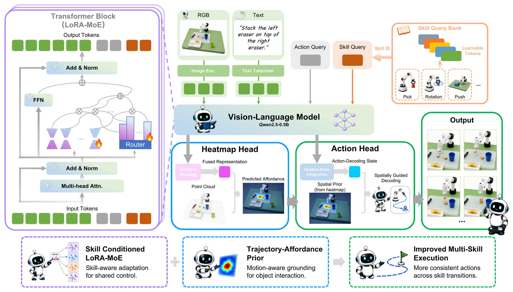
- 输入与条件编码：模型接收视觉观测 $\mathbf{o}_t$、语言指令 $\mathbf{l}$ 及粗粒度技能条件 $s_t$。其中 $s_t$ 通过词汇匹配从指令中提取，仅用于索引技能查询和路由偏置库，不改变原始指令语义，为后续多技能解耦提供基础。
- LLM骨干网中的LoRA-MoE适配：在LLM的FFN/MLP子层嵌入LoRA-MoE模块。技能条件 $s_t$ 调制专家路由机制，引入技能相关的偏置（skill-conditioned routing bias），使共享策略能根据当前任务动态激活特定专家路径，实现技能感知的特征表示与参数高效适配。
- 动作头中的轨迹-可供性空间先验：动作解码器利用演示数据生成的抓取运动与场景几何信息，监督预测可供性热力图（affordance heatmap）。该热力图被转换为补丁级空间先验（patch-level spatial prior），直接引导动作生成过程，增强模型对交互区域的注意力聚焦。
- 联合优化目标：整体架构通过耦合技能级专业化（LoRA-MoE）与交互感知空间定位（空间先验）进行端到端训练。损失函数包含动作回归、可供性热力图监督及MoE路由正则化项，确保策略在多技能序列操作中兼顾语义理解精度与空间执行鲁棒性。
进入深读卡片查看完整方法与千问问答 →
2.98VLA / 策略架构π系列VLA2610.32271
该研究将预训练VLA模型（基于MolmoAct2）部署于Unitree Go2四足机器人搭载Piper机械臂的腿式操作平台上，实现闭环移动操作。通过统一数据采集与部署接口及优化动作视界，实验表明扩大演示数据覆盖范围可使末端执行器误差降低30%，且引入推物体等新技能未损害原有抓取性能。
📐 查看论文原版模型结构图与讲解（Figure 2）
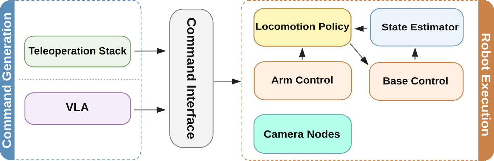
- 共享机器人端感知与运动控制模块：图示左侧至中部展示了部署阶段（Deployment）的核心执行链路。该部分包含视觉感知、足式/轮式运动控制及机械臂操作三大子系统，其输入为多模态观测流 $\mathcal{O}_t = \{I_t, P_t, S_t\}$（图像、本体状态等）。这些模块在数据采集与部署阶段完全复用，确保了策略执行环境的一致性，输出底层关节力矩或速度指令 $\tau_t$。
- VLA推理替换Leader接口：图右侧对比了数据采集与部署的关键差异。在数据采集时，人类通过Leader端设备提供动作监督；而在部署阶段，视觉-语言-动作（VLA）模型 $\pi_\theta$ 直接替代Leader接口。该模块接收共享的感知特征 $z_t = f_{\text{enc}}(\mathcal{O}_t)$ 及自然语言指令 $l$，通过自回归或扩散过程生成高层动作序列 $a_{t:t+H}$，实现端到端的自主决策。
- 闭环数据流与模块解耦：整体结构呈现清晰的“感知-决策-执行”闭环。VLA模型输出的动作经运动规划器映射为底层控制信号，驱动机器人完成操作任务。这种设计强调了高层语义推理（VLA）与低层物理控制（Locomotion/Arm Control）的模块化解耦，使得同一套底层硬件栈既能支持人类示教数据采集，又能无缝切换至自主VLA推理部署。
进入深读卡片查看完整方法与千问问答 →
2.89VLA / 策略架构π系列VLA2610.32208
该研究利用稀疏自编码器（SAE）分解OpenVLA激活，发现其保留了预测任务结果的信息，能在不可恢复点之前以0.71 AUROC预测失败。通过定位关键激活区间并结合VLM解释，自动识别出与成功或失败强相关的可解释行为模式（如停滞接近目标），在保留测试集上验证描述准确率达0.76 AUROC。
📐 查看论文原版模型结构图与讲解（Figure 1）
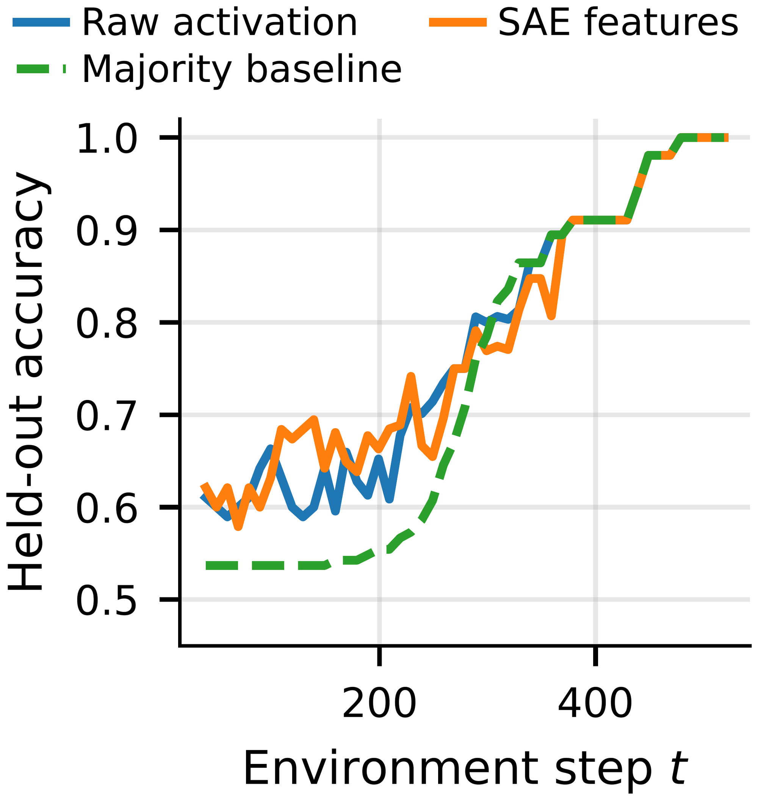
- 数据分布与基线对比：图中左侧展示了不同任务难度下的准确率分布直方图，横轴为模型预测准确率 $Acc$，纵轴为样本频率。通过叠加“多数类基线”（Majority Baseline）虚线，直观揭示了在类别极度不平衡场景下，仅靠预测高频类即可获得的性能下限，从而界定模型需超越的统计基准。
- 留出集评估机制：右侧散点图或箱线图呈现了模型在未见过的测试集（Held-out set）上的泛化表现。每个数据点代表一次独立实验或特定子任务的准确率 $Acc_{test}$，通过对比训练集与测试集的分布差异，量化模型的过拟合程度及真实泛化能力。
- 性能阈值分析：图中关键垂直参考线标示了显著优于基线的性能阈值 $\tau$。若模型输出准确率分布主体位于 $\tau$ 右侧且远离基线，表明其具备有效的特征提取与决策能力；反之则说明模型未能捕获有效语义信息，仅依赖先验概率进行猜测。
进入深读卡片查看完整方法与千问问答 →
世界模型 / WAM · 1
2.91世界模型 / WAMπ系列世界模型2610.32965
RynnUnify是一个16B统一具身智能模型，采用混合Transformer架构结合自回归推理器与扩散生成器，通过交错视频-语言推理实现长时程视觉规划。该模型在Rynn-VP基准上比Cosmos 3 Nano提升9.75分，其世界动作扩展在RoboCasa365复合任务中达到51.5%成功率，并在真实机器人任务中平均成功率为46.7%。
📐 查看论文原版模型结构图与讲解（Figure 1）
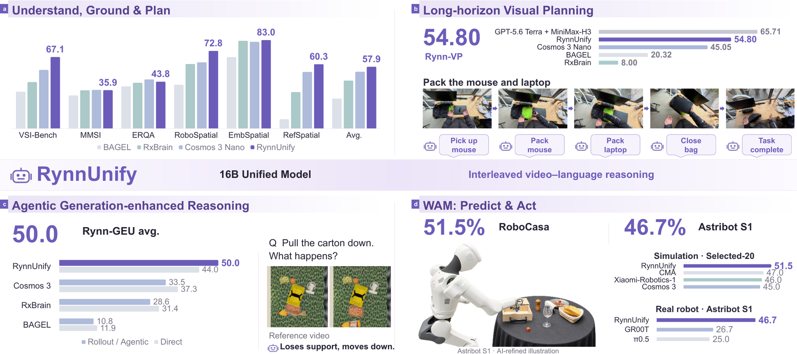
- 统一多模态输入编码：系统接收视觉观测 $o_t$、语言指令 $l$ 及本体状态 $s_t$，通过共享的视觉-语言骨干网络（如 ViT + LLM）提取高维语义特征 $h_{vis}$ 与动作潜变量 $z_a$。该模块实现了具身理解与智能体推理的特征对齐，将离散的自然语言意图映射至连续的机器人操作空间，为后续规划提供统一的上下文表征 $\mathcal{C}_t$。
- 分层视觉规划与推理：基于特征 $\mathcal{C}_t$，模型执行层级化决策。高层通过自回归生成中间子目标序列或思维链（CoT）$\tau_{sub}$，实现长程任务分解；底层结合世界模型预测未来状态分布 $p(s_{t+1}|s_t, a_t)$，在隐空间中进行视觉规划以评估动作可行性，确保推理过程具备物理一致性与因果逻辑性。
- 统一动作生成与执行：最终阶段将规划结果解码为具体机器人动作序列 $\mathbf{a}_{t:t+k}$。模型采用扩散策略或自回归头直接输出连续控制信号，涵盖末端位姿、夹爪开合等维度。该过程无缝衔接理解、规划与行动，形成从感知到执行的闭环，验证了 RynnUnify 在单一架构下统一多任务能力的有效性。
进入深读卡片查看完整方法与千问问答 →
机器人 RL / 后训练 · 1
2.95机器人 RL / 后训练π系列机器人 RL2610.32676
本文提出一种基于学习速度先验的机器人演示重定时方法，通过Transformer模型从大规模数据中预测沿路径的速度分布，将遥操作演示重新调整为手持演示的快速节奏。在RoboLab仿真中，该方法使策略成功率提升且抖动减少52%；在真实机器人叠杯任务中，执行时间从6.02秒缩短至3.50秒（提速1.72倍），成功率为29/30。
📐 查看论文原版模型结构图与讲解（Figure 2）
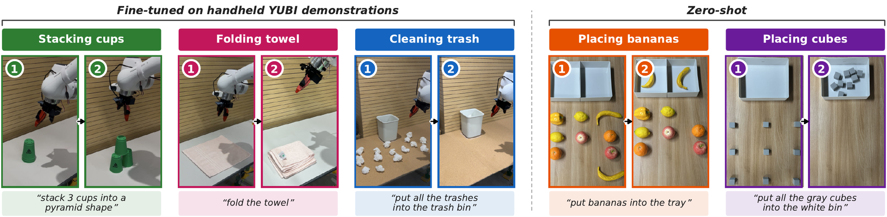
- 任务场景与指令映射：图示左侧展示了五种真实世界操作任务（堆叠杯子、折叠毛巾、清理垃圾、放置香蕉、放置方块）的初始状态 $(1)$ 与目标状态 $(2)$，并对应自然语言指令。该模块确立了多模态输入空间，将视觉观测 $o_t$ 与文本指令 $l$ 作为策略 $\pi_{0.5}$ 的条件输入，定义了从当前场景到目标配置的映射边界。
- 基于手持演示的策略微调：针对堆叠、折叠及清理任务，模型利用手持 YUBI 机器人采集的示教数据 $\mathcal{D}_{demo}$ 进行监督微调（SFT）。此阶段通过最小化动作预测误差 $\mathcal{L} = \mathbb{E}_{(o,a,l) \sim \mathcal{D}} [\| a - \pi_{0.5}(o, l) \|^2]$，使策略网络学习从视觉特征到连续控制信号 $a_t$ 的精确映射，实现特定技能的闭环执行。
- 零样本泛化能力验证：右侧展示的放置香蕉与方块任务未使用任何示教数据，直接由预训练模型 $\pi_{0.5}$ 进行零样本（Zero-shot）推理。这证明了模型在大规模异构数据上习得的通用表征 $z_t$ 具备强大的跨物体、跨场景泛化能力，无需额外微调即可处理未见过的操作指令与物体几何结构。
进入深读卡片查看完整方法与千问问答 →
导航 / VLN / SLAM · 6
3.99导航 / VLN / SLAM导航VLN2610.31762
本文提出RepresentNav，一种基于自构建表示空间的导航基础模型。该方法通过Representation Residuals从多个视觉基础模型的内部结构中动态构建任务导向的表示空间，并引入潜在思维链（JEPA架构）在动作前预测未来场景表示。模型在VLNVerse、EVT-Bench等基准上取得SOTA，其中VLNVerse细粒度成功率达83.80%（提升20.05个百分点），并在真实机器人上验证了有效性。
📐 查看论文原版模型结构图与讲解（Figure 1）
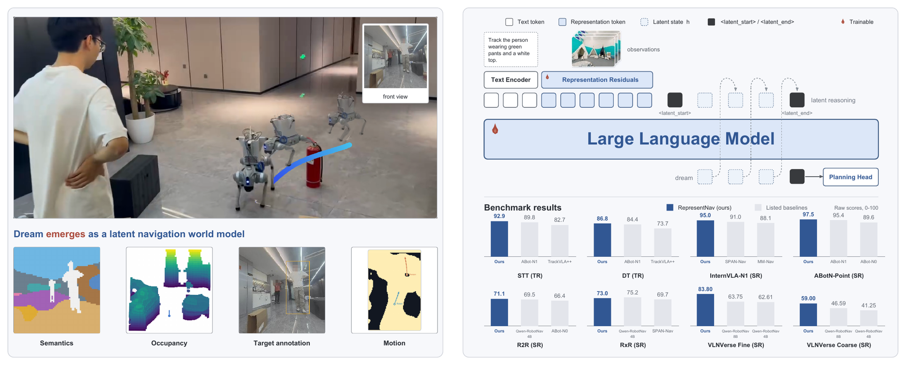
- 多源视觉特征聚合（\mixres）：输入为 $N$ 路相机观测 $I_{1:t}^{1:N}$，动态跨越 DINOv3 等三个冻结视觉基础模型的全深度层进行注意力交互。该模块构建策略自建的共享表示空间，并通过可学习的
[CLS] token 对每个视图的特征进行摘要，实现“看所需”（See what I need）的语义、几何与动态结构提取。 - 潜在思维链预测（Latent CoT）：在规划前执行“想所欲”（Dream what I want）机制。模型在当前表示空间中展开潜在思维链，预测未来时刻观测的
[CLS] token 序列。此过程受 VISReg 正则化约束，确保潜在状态演化的平滑性与物理一致性，为后续动作生成提供前瞻性上下文。 - 统一策略与多任务输出：基于预测的未来潜在状态，规划头直接输出当前机器人坐标系下的八个航点 $\tau=\{(x_i,y_i,\theta_i)\}_{i=1}^{8}$（含位置与偏航角）。该共享骨干网络同时支持图像/视频问答（QA）的自回归生成，解码后的潜在变量仅用于可视化分析，不直接参与控制回路。
进入深读卡片查看完整方法与千问问答 →
3.99导航 / VLN / SLAM导航目标导航2610.32554
HGWM提出了一种分层图引导的世界模型，通过耦合LLM生成的房间-锚点先验与持久空间语义记忆实现零样本物体导航。该方法采用粗粒度视觉语义评分和细粒度符号兼容性匹配的两阶段决策机制，在HM3D v0.1数据集上实现了62.6%的成功率（SR）和31.5%的路径长度加权成功率（SPL），优于基线WMNav。
📐 查看论文原版模型结构图与讲解（Figure 1）
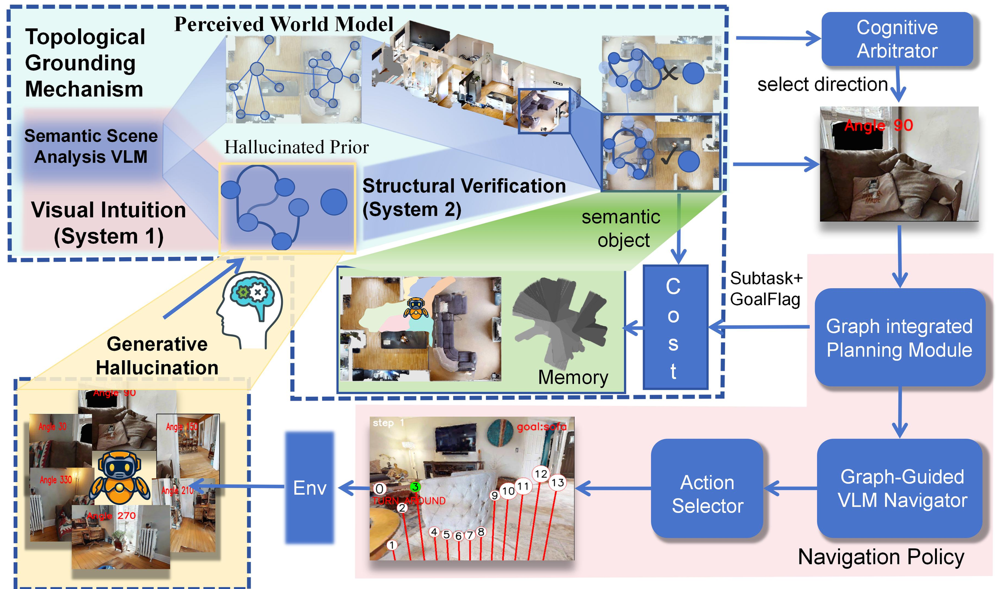
- 目标先验生成模块：LLM基于目标类别$c$生成假设性房间-锚点先验图$G_{goal}=\mathrm{LLM}_{prior}(c,\text{prompt})$，作为类别条件化的场景假设而非真实地图；该模块输出结构化语义知识，为后续推理提供初始搜索空间约束。
- 感知与记忆构建模块：智能体接收RGB-D观测$O_t=(I_t,D_t)$及平面位姿$P_t\in SE(2)$，将视觉特征转化为符号化信息并填充至空间-语义记忆库$M_t$中；此过程实现从原始像素到高层语义状态的映射，形成预测性导航状态的核心组成部分。
- 图引导决策模块：基于世界模型状态$\mathcal W_t=(G_{goal},M_t,\{(c_t^\alpha,f_t^\alpha)\}_{\alpha\in\mathcal A})$进行推理，其中$c_t^\alpha\in[0,10]$为粗粒度视觉评分，$f_t^\alpha\in[0,1]$为符号兼容性分数；系统通过比较候选航向$\alpha\in\{30,\dots,330\}^{\circ}$的得分，指导高层搜索方向选择与局部导航器执行短视距位移。
进入深读卡片查看完整方法与千问问答 →
3.99导航 / VLN / SLAM导航VLN2610.32697
SP-Guide提出了一种基于Transformer的空中视觉语言导航框架，通过空间先验跨模态编码器解决局部观测与全局地图间的坐标语义不匹配问题。该方法引入指令增强解码器和目标收敛过滤器以优化终端决策，在CityNav基准测试中显著提升了成功率，尤其在未见环境中表现优异。
3.83导航 / VLN / SLAM导航其他2610.32596
OWLS提出了一种零样本行星车导航方法，直接利用开放词汇视觉语言模型（VLM）的密集特征图作为速度场进行规划。该方法通过地面投影和形态学操作将VLM评分适配至机器人平台，并结合最小时间规划器生成轨迹，无需任务特定训练、地形标注或持久地图。实验在真实行星车及模拟火星/月球环境中验证了其有效性，单周期规划耗时约692毫秒。
📐 查看论文原版模型结构图与讲解（Figure 1）
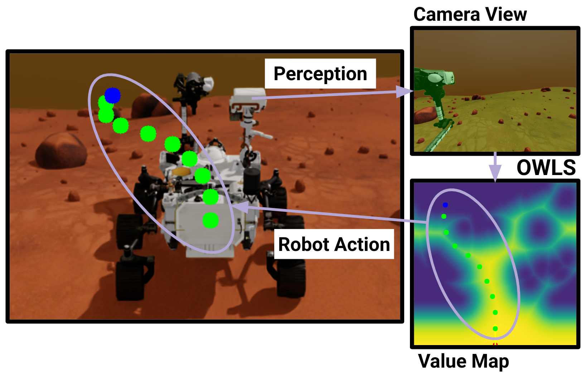
- VLM密集特征评分：系统以单帧相机图像为输入，利用开放词汇视觉语言模型（VLM）对“可通行地形”文本提示进行像素级对齐响应。输出连续的特征图 $H \in [0,1]^{h\times w}$ 而非二值掩码，保留像素与提示匹配的置信度强度，作为后续规划的基础感知信号。
- 地面投影与形态学适配：基于平面假设及相机内外参矩阵 $\mathbf{K}$，通过单应性变换 $\mathbf{M}$ 将 $H$ 映射至机器人坐标系下的俯视价值图 $V:\Omega\to[0,1]$。随后应用两次灰度形态学操作调整 $V$，以适配特定机器人的尺寸与运动能力，生成最终的速度场。
- 最小时间规划与轨迹跟踪：基于适配后的速度场构建最小时间规划器，直接输出通往目标（蓝色）的局部航点序列（绿色）。控制器在控制频率下沿这些航点进行实时跟踪，实现从感知到动作的闭环，无需维护持久化地图即可在新图像到来时重新规划。
进入深读卡片查看完整方法与千问问答 →
3.43导航 / VLN / SLAM导航其他2610.32130
TravSUITE提出了一种用于越野高速导航的自监督可通行性系统，结合基于视觉基础模型的体素建图与统一神经网络进行BEV视角下的几何、语义及成本预测。该方法通过逆强化学习（IRL）和地图修复任务实现无标注训练，并引入不确定性感知机制以优化部署时的风险适应。实验表明，结合地图修复与风险估计可使导航错误减少80%，自主行驶速度提升5%。
📐 查看论文原版模型结构图与讲解（Figure 1）
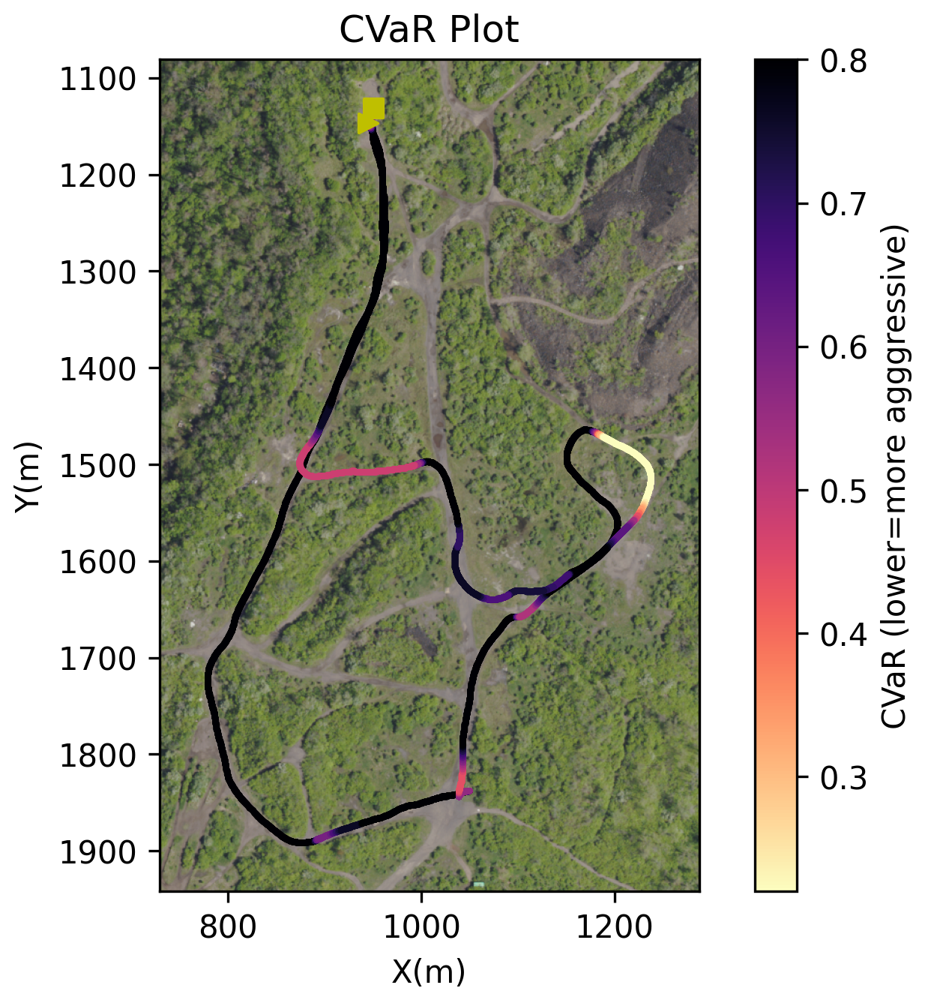
- CVaR 风险度量计算模块：该模块接收并行轨迹规划（Parallel Trav.）生成的候选轨迹集合 $\tau$ 及其对应的累积成本 $f_\theta(\tau)$。通过排序与加权聚合，计算条件风险价值（Conditional Value-at-Risk, CVaR），旨在量化尾部风险而非仅关注期望成本，从而在不确定性环境中实现更鲁棒的自主导航决策。
- 行为地图约束注入机制：输入为 BEV 空间的行为地图 $\Pi_t = [C_t, S_t]$，其中 $C_t$ 表示通行代价，$S_t$ 表示最大允许速度。模块依据公式 $f_\theta(\tau) = \sum_{x \in \tau} [ C_t(x) + K_1 \mathbbm{1}[||x_v||_2 > S_t(x)] ] + K_2 ||x_T - x_G||$ 对轨迹进行评分，利用硬约束 $K_1 \approx \infty$ 确保轨迹不超速，并平衡终点距离与路径代价。
- 自主导航运行状态可视化：图表横轴代表时间步或迭代次数，纵轴展示 CVaR 值的动态变化曲线。该部分直观反映了在“Parallel Trav. + CVaR”策略下，随着机器人对环境观测 $O_{0:t}$ 的积累及规划优化，系统对潜在高风险路径的规避能力增强，表现为风险度量值的收敛或稳定下降，验证了方法在长程导航中的安全性与有效性。
进入深读卡片查看完整方法与千问问答 →
2.62导航 / VLN / SLAM导航定位与建图2610.32976
FlexGlue提出了一种非对称的稀疏到密集特征匹配网络，通过Transformer聚合全局上下文，在保持稀疏匹配高效性的同时实现亚像素级精度。该模型联合训练匹配与视觉消歧任务，能高精度拒绝非共视图像对（如视觉对称结构），显著提升了SfM和视觉定位的鲁棒性与吞吐量。
📐 查看论文原版模型结构图与讲解（Figure 1）
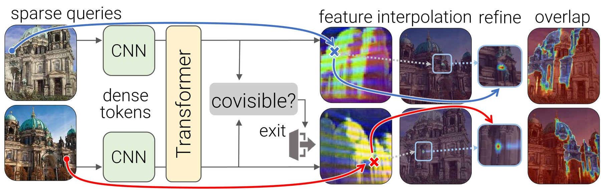
- 特征编码与Token构建：输入图像 $\imga, \imgb$ 经冻结的 ConvNeXt-B (DINOv3) 提取多尺度密集特征。各阶段特征重采样至统一步长 $\patchsize$，线性投影为初始 Token 网格 $\toksa^0, \toksb^0 \in \mathbb{R}^{\numtokens{\times}\tokdim}$，并附加归一化坐标 $\gridpt$，实现局部结构与高层语义的融合。
- Transformer上下文聚合：$\numlayers$ 层 Transformer 交替执行自注意力（Self-Attention）以聚合单图上下文，及交叉注意力（Cross-Attention）以建立跨图关联，输出增强后的 Token $\toksa^l, \toksb^l$。同时，协视性头（Covisibility Head）逐层预测图像对重叠概率，若判定不可匹配则提前终止推理。
- 粗匹配与可匹配性预测：轻量级头从增强 Token 中读取每个查询关键点 $\kptsa$ 的对应坐标 $\corrab$、置信度 $\confid$ 及可匹配性信号 $\matchability$（指示可见性），生成稀疏到密集的初步对应关系。
- 亚像素精修与几何验证：针对可匹配点，通过特征插值、密集相关计算及匹配细化模块，将粗坐标优化至亚像素精度。最终结合几何距离推导关键点间的点对点分配，并输出场景一致性评分以排除视觉对称等误匹配。
进入深读卡片查看完整方法与千问问答 →
灵巧操作 / 接触 · 2
3.46灵巧操作 / 接触组合泛化交互表示/条件接口2610.32961
该论文提出了一种基于光学相干断层扫描（OCT）的软体组织形状控制框架，通过比较全体积、掩码稀疏体积和体素化点云三种3D表示，以及显式（Explicit）和扩散（Diffusion）策略，实现闭环目标条件控制。实验表明，引入当前状态与目标状态的残差条件（residual conditioning）能显著降低方向性形状误差（从0.748mm降至0.555mm），其中体素化点云结合显式策略在深度和方向控制上分别达到0.534mm和0.443mm的精度，并在离体猪组织上验证了有效性。
📐 查看论文原版模型结构图与讲解（Figure 1）
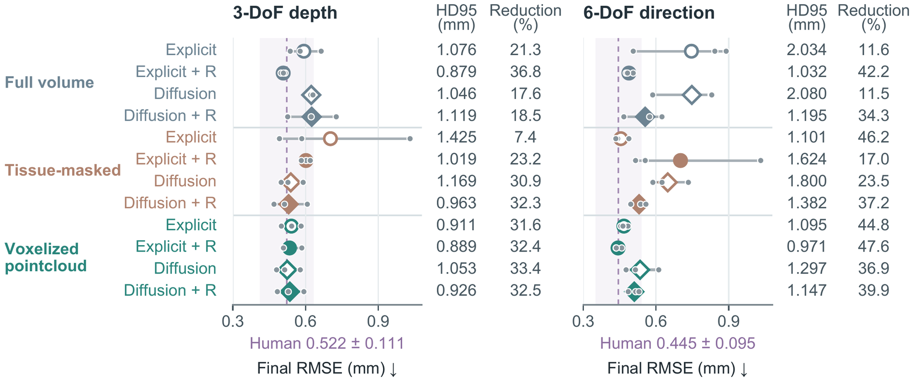
- 闭环控制与策略预测：系统以预形变OCT扫描 $V_{\mathrm{pre}}$ 生成的目标体积 $G=\mathcal T(V_{\mathrm{pre}};\eta)$ 为条件，接收观测历史 $V_{t-H_o+1:t}$ 及工具位姿 $\mathbf p_{t-H_o+1:t}$。策略网络 $\pi_\theta$ 输出动作序列 $\widehat{\mathbf A}_t \in \mathbb R^{H_a\times6}$，包含归一化的平移与旋转增量，经反归一化后执行首个动作以闭合控制回路。
- 多模态表征与目标生成：输入端整合全强度体积、组织掩码稀疏体积或体素化点云作为OCT表征，确保当前状态与目标 $G$ 在空间校准上的一致性。该模块支持显式（Explicit）与扩散（Diffusion）两种策略架构，并引入残差条件化机制（标记为 $R$），以增强对软组织形变的建模能力。
- 性能评估与基准对比：右侧图表量化了形状精度与可靠性，核心指标包括最终形状RMSE均值及HD95。紫色虚线带标示人类演示的端点均值及 $\pm1$ 标准差范围，作为性能上限参考；不同符号（圆形/菱形）区分策略类型，灰色散点展示目标平均部署扫描结果，直观呈现模型在缩小与人类演示差距方面的有效性。
进入深读卡片查看完整方法与千问问答 →
3.27灵巧操作 / 接触组合泛化交互表示/条件接口2610.32225
RoboCode提出了一种基于软门控原语代码本（soft-gated primitive codebook）的中间动作表示，将短视域动作块建模为多个学习到的原语的软组合。该方法通过两阶段框架：第一阶段从多任务演示中联合训练共享的原语接口以重构动作（平均MSE 0.0187），第二阶段冻结该接口并训练特定任务的编码器映射状态至共享潜空间。在ManiSkill五个操作任务上的实验显示，RoboCode实现了75.6%的平均闭环成功率，优于ACT（68.8%）和Diffusion Policy（41.6%），证明了可解释且有效的中间动作表示能提升控制性能。
📐 查看论文原版模型结构图与讲解（Figure 1）
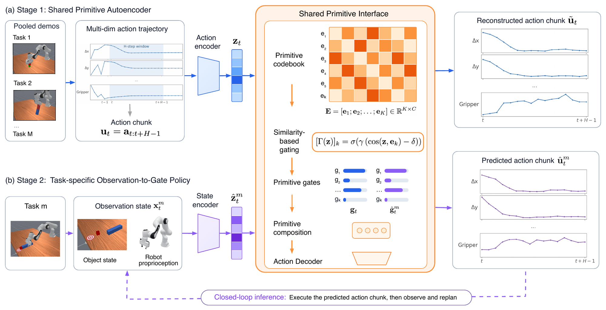
- Stage I：动作编码器与共享原语接口学习：该阶段从多任务池化的动作块（action chunks）中联合训练动作编码器 $E_a$ 和共享原语动作接口 $\mathcal{P}$。模型将原始动作序列映射至潜在空间，提取具有跨任务泛化能力的基元特征表示，确立后续状态-动作对齐的基准流形结构。
- Stage II：任务特定状态编码与冻结接口：在保持 Stage I 训练好的原语接口 $\mathcal{P}$ 参数完全冻结的前提下，针对每个具体任务独立训练状态编码器 $E_s$。该模块将视觉观测或本体感知数据映射至共享潜在空间，通过最小化预测动作块与真实动作块的分布差异，实现观测到基元动作的精准对齐。
- 推理阶段：滚动时域执行机制：部署时，系统采用滚动时域控制（receding-horizon）策略。当前时刻 $t$ 的状态经 $E_s$ 编码后，通过冻结接口 $\mathcal{P}$ 解码生成未来时间步的动作块预测 $\hat{a}_{t:t+H}$。仅执行动作块中的首个动作 $a_t$，随后滑动窗口并重复上述过程，确保控制的实时性与鲁棒性。
进入深读卡片查看完整方法与千问问答 →
青稞速报 / 开源模型发布 · 5
3.00青稞速报 / 开源模型发布青稞速报开源发布机器人具身青稞
作者：岳博，在香港中文大学（深圳）在读博士 青稞社区为科研人员提供成果宣传支持，如有优秀研究成果分享推广，欢迎投稿联系：aiFreeCode 谈到具身智能，我们很容易想到更强的视觉语言模型、更多的机器人数据，以及更好的控制策略。但有一个问题往往被放在了训练之外：如果机器人的身体本身不适合任务，再聪明
3.00青稞速报 / 开源模型发布青稞速报开源发布GroundingPI机器人具身青稞
先说个场景。 你让机器人去桌上拿那个蓝色杯子，它答得挺快：好，蓝色杯子。 然后手伸过去，抓了个空。 不是它不认识。它认识，甚至能告诉你杯子里有没有水。但它指不准——杯柄在左边还是右边，杯口离桌沿还有几厘米。就差这么一点，手就空了。 第一反应往往是“手”的问题：控制不够精细、动作不够稳。但把这两篇论文
3.00青稞速报 / 开源模型发布青稞速报开源发布WAM机器人青稞
机器人要做到实时控制，需要足够长的视觉历史，来判断物体怎么动、任务进行到了哪一步；但只要开始处理历史，动作就会变慢——这是一对天然矛盾。 更微妙的问题在于：给模型历史，它就会用吗？ 来自 NVIDIA、MIT、香港大学与 UCSD 的团队提出 Long-WAM——一个面向实时控制约束、系统性扩展因果
3.00青稞速报 / 开源模型发布青稞速报开源发布机器人微调权重青稞
作者：Kaichen Zhou 青稞社区为科研人员提供成果宣传支持，如有优秀研究成果分享推广，欢迎投稿联系：aiFreeCode 每任务 24 条参考轨迹，只引导一个内部特征，动作模型权重保持冻结。 在三项真实机器人任务上，SteerAct 将平均成功率从 31.1% 提升至 52.2%：增加 21
3.00青稞速报 / 开源模型发布青稞速报开源发布机器人青稞
作者：Kaichen Zhou 青稞社区为科研人员提供成果宣传支持，如有优秀研究成果分享推广，欢迎投稿联系：aiFreeCode 每任务 30 条遥操作示范，让触觉在视觉更新之间及时修正动作。 在四项真实机器人任务上，T-WLA 将平均成功率从 17.0% 提升至 50.0%，增加 33 个百分点。